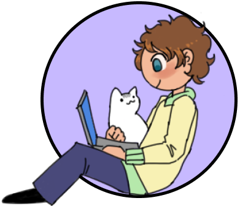

More work
Website Design and Development
 Created as part of my art minor, this website was my first attempt at creating a portfolio. Hand-coded with custom CSS styling, I learned how to prototype in Figma, adjust my site's formatting to work on mobile and desktop screens, and created many unique elements and UI for the site itself. The modal art gallery was adopted into this portfolio. Click here or the image to check out the site!
Game assets and UI work
Myself and a friend handled 100% of the animation and art for our Capstone game Open Catsket. Notably, I created and animated the sprites for all of the overworld entities, including the player's idle and running animations. I also created the opening cutscene and ending victory art, using Clip Studio Paint and Adobe Animate, used Aesprite for the spritework, and Procreate for the dialogue sprites.
I also created the UI and level design for my rapid-prototype game Countdown. The total development time of this game was two weeks.
Publications
One field that I've been able to apply my coding experience-- both during and after my degree-- is healthcare. Over several summers, I had the opportunity to work at the Center for Healthcare Engineering and Patient Safety (CHEPS). One project I worked on entailed creating a simulation of prenatal care through Michigan Medicine to best tailor visit schedules to the varying needs of expectant patients. I spearheaded the simulation coding, and myself and my team noticed ways in which we could potentially reduce provider overbooking, we were able to craft research questions that were then formulated into abstracts for the American Journal of Obstetrics & Gynecology.
- Quantifying the operational impacts of varying patient-provider continuity policies in prenatal care
- The effects of dynamic patient trajectories on prenatal care utilization and clinical operations
Level Design
I headed the feature and level design for the custom feature for our Zelda NES remake project, all of Countdown's levels, and worked on establishing some of the core gameplay mechanics for Open Catsket, as well as designing levels around these mechanics.
You can find a full Google Drive of prototypes and sketches for levels and features by clicking here.
{kind=link}
{kind=link}